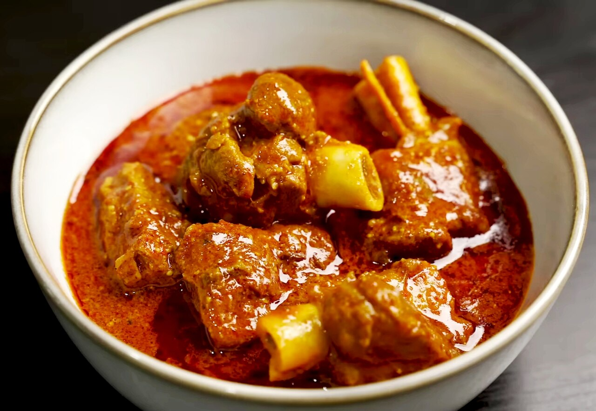

Rogan Josh
Home
Welcome to the Rogan Josh recipe page! Here, you'll find a delightful recipe that will make your taste buds
dance with joy.

Introducing our treasured family recipe for authentic Rogan Josh! Tender lamb pieces simmered in a rich, aromatic sauce made with a blend of spices,
yogurt, and a hint of saffron. Each bite is a burst of flavor that transports you to the heart of Kashmiri cuisine.
Ingredients for rogan josh!
- 1 kg lamb, cut into pieces
- 2 large onions, finely sliced
- 4 cloves garlic, minced
- 1-inch piece ginger, grated
- 2 cups yogurt
- 2 tablespoons Kashmiri red chili powder
- 1 teaspoon turmeric powder
- 1 teaspoon garam masala
- 1 teaspoon fennel powder
- 2-3 green cardamom pods
- 2-3 cloves
- 1-2 bay leaves
- Salt to taste
- Oil or ghee for cooking
- Fresh coriander leaves for garnish
Instructions to make rogan josh!
- Heat oil or ghee in a large pot over medium heat. Add the sliced onions and sauté until they turn golden brown.
- Add the minced garlic and grated ginger, and sauté for another minute until fragrant.
- Stir in the Kashmiri red chili powder, turmeric powder, fennel powder, and salt. Cook for a minute to release the spices' aroma.
- Add the lamb pieces to the pot and sear them until they are browned on all sides.
- Reduce the heat and add the yogurt, stirring well to coat the lamb evenly with the spices and yogurt.
- Add the green cardamom pods, cloves, and bay leaves. Cover the pot and let it simmer on low heat for about 1.5 to 2 hours, or until the lamb is tender and the flavors meld together.
- Once the lamb is cooked, sprinkle garam masala over the dish and stir gently.
- Garnish with fresh coriander leaves before serving.
- Serve hot with steamed rice or naan bread.
Enjoy your homemade Rogan Josh, a dish that brings warmth and joy to every meal!
Enjoy your meal!
We hope you enjoy making and savoring this delicious Rogan Josh. It's a dish that not only fills your stomach but also warms your heart. Happy cooking and bon appétit!
More Recipes
Check out our Chicken Biryani recipe for another delightful dish that will tantalize your taste buds!
Explore more recipes on our homepage!